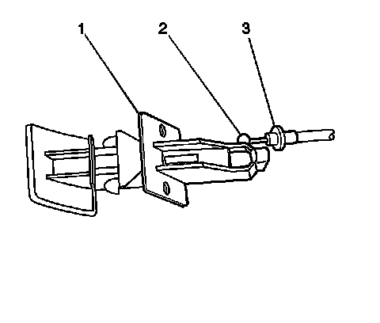

Parking Brake Release Handle Assembly Replacement
Parking Brake Release Handle Assembly Replacement
Removal Procedure
1. Remove the knee bolster. Refer to Knee Bolster Replacement (Left Hand Drive) (Service and Repair)Knee Bolster Replacement (Right Hand Drive) (Service and Repair) .

2. Remove the park brake release handle mounting screws.
3. Remove the park brake release cable housing (3) from the park brake release handle assembly (1).
4. Remove the park brake release handle (2) from the park brake release cable (1).
5. Remove the park brake release handle from the vehicle.
Installation Procedure
1. Install the park brake release handle (2) to the park brake release cable (1).
2. Install the park brake release cable housing (3) to the park brake release handle assembly (1).
3. Install the park brake release handle assembly (1) to the knee bolster.
Notice: Refer to Fastener Notice (Fastener Notice) .
4. Install the park brake release handle mounting screws.
Tighten the park brake release handle mounting screws to 2 N.m (18 lb in).
5. Install the knee bolster. Refer to Knee Bolster Replacement (Left Hand Drive) (Service and Repair)Knee Bolster Replacement (Right Hand Drive) (Service and Repair) .